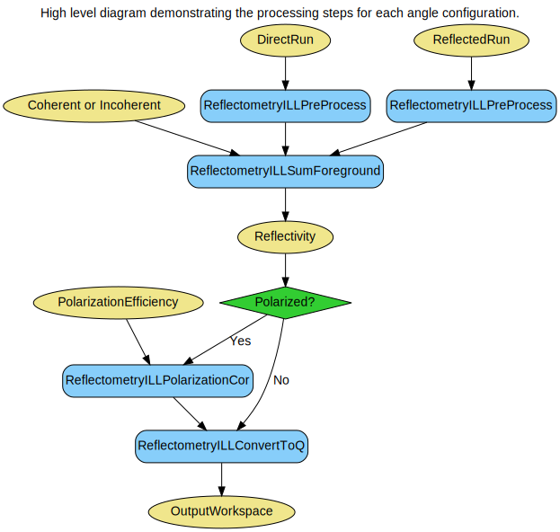
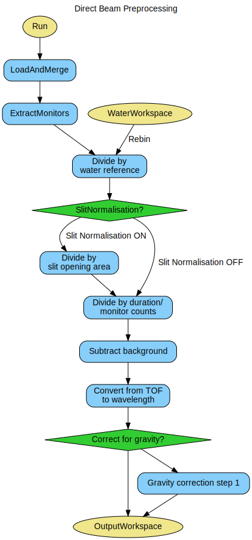
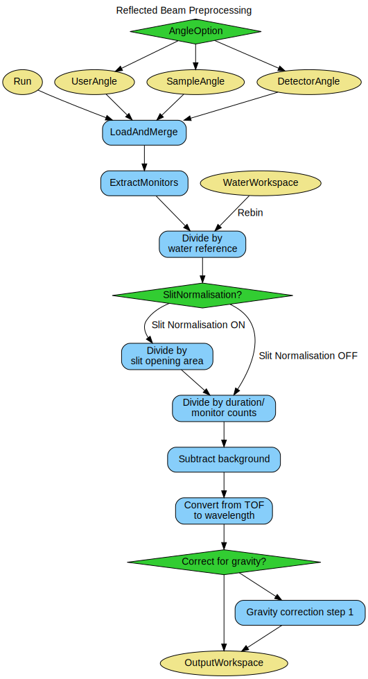
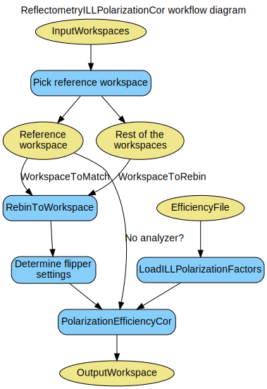
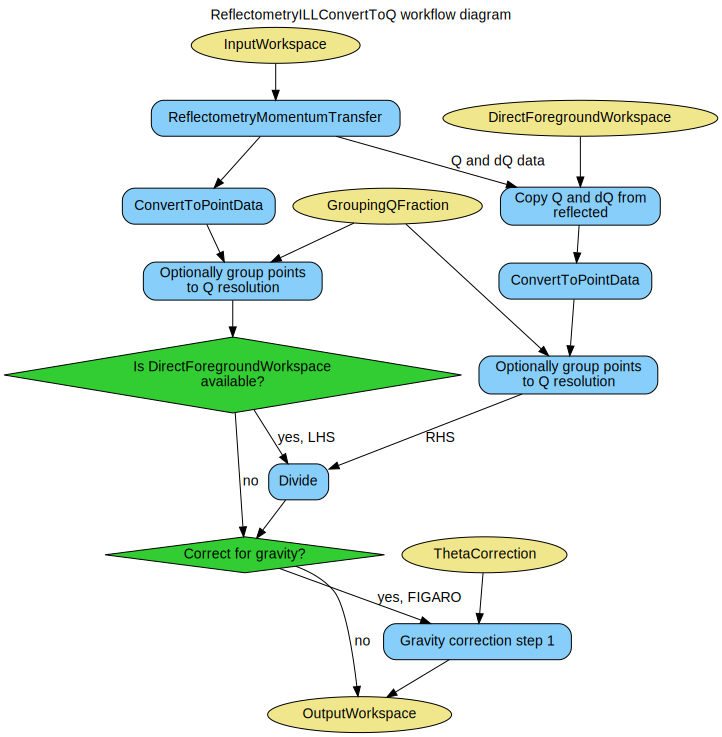

\(\renewcommand\AA{\unicode{x212B}}\)
Data reduction for reflectometry instruments at the ILL¶
There is one algorithm providing the entry point and steering the reduction workflow for both FIGARO and D17:
- ReflectometryILLAutoProcess v1
Controls the reduction workflow of both direct and reflected beams from loading, through corrections, to final reflectivity curve as a function of momentum exchange.
This algorithm depends on the number of dedicated ILL algorithms handling loading, corrections, and converting data:
- LoadILLReflectometry v1
Loads D17 and FIGARO NeXus data, fits the foreground position and places the instrument such that the foreground falls at \(2\theta = 0\)
- ReflectometryILLPreprocess v1
Loads, merges, normalizes, subtracts background, and calculates gravity correction for FIGARO.
- ReflectometryILLSumForeground v1
Sums foreground pixels in selected summation mode, optionally converting to reflectivity.
- ReflectometryILLPolarizationCor v1
Performs polarization efficiency corrections.
- ReflectometryILLConvertToQ v1
Converts a reflectivity workspace from wavelength to momentum transfer.
Together with other algorithms and services provided by the Mantid framework, the reduction algorithms can handle a number of reduction scenarios. If this proves insufficient, however, the algorithms can be accessed using Python. Before making modifications it is recommended to copy the source files and rename the algorithms as not to break the original behavior.
This document tries to give an overview on how the algorithms work together via Python examples. Please refer to the algorithm documentation for details of each individual algorithm.
A description of the usage of the algorithms for the D17 and FIGARO data reduction is presented along with several possible workflows, depending on summation type, the source of the angle (detector, sample, user-defined), and whether the neutrons are polarized.
Reduction basics¶
A very basic data reduction would include a direct and a reflected beam measurement of the sample at one angle position, follow the following steps:
Preprocessing of direct and reflected beams in ReflectometryILLPreProcess
Summing of foreground for both direct and reflected beams in ReflectometryILLSumForeground
Finally, division of reflected beams workspace by direct measurement and conversion to momentum exchange in ReflectometryILLConvertToQ
This workflow could be also represented as the diagram below.
Note
To run these usage examples please first download the usage data, and add these to your path. In Mantid this is done using Manage User Directories.
Loading and initial fitting¶
The first step of working with reflectometry data is to separately load direct and reflected beams via dedicated loader, LoadILLReflectometry. The loader handles the creation of appropriately sized workspace with the relevant instrument, filling it with data loaded from raw NeXus file, and adding all the metadata available. The proper position and orientation of the instrument in 3D space is ensured by rotating the instrument such that the centre of the reflectometry peak \(2\theta\) falls at 0.0. The position of the reflectometry peak can be provided by the user via ForegroundPeakCentre property, otherwise it is fitted using a Gaussian distribution on the workspace where the TOF dimension is integrated over. In case of reflected beam, and either sample or user angle options, the reflectometry peak is not placed as 0.0, but at the angle provided via BraggAngle property. This rotation takes place in either in horizontal or vertical plane, depending on the instrument, D17 and FIGARO, respectively.
Example - Loading reflectometry data
ws = LoadILLReflectometry(
Filename='317369',
OutputWorkspace='direct_beam_ws',
Measurement='DirectBeam',
XUnit='TimeOfFlight'
)
print("Number of TOF bins: {}".format(ws.blocksize()))
print("Min/max of TOF: {:.3f}, {:.3f}".format(ws.readX(0)[0], ws.readX(0)[-1]))
Output:
Number of TOF bins: 1000
Min/max of TOF: -470.036, 56529.964
Preprocessing¶
This algorithm is the first step in the ILL reflectometry reduction workflow. It:
loads data from disk by using LoadAndMerge (LoadILLReflectometry, MergeRuns)
merges the numors
performs the detector angle calibration
normalizes to a (water) reference (optional)
normalizes to slit sizes (optional)
normalizes to experiment time or monitor counts (optional)
subtracts time-independent background (optional)
converts to wavelength
calculates gravity correction to wavelength and reflected angle (optional)
The algorithm can be thought as an ‘advanced loader’, and should be used to load both direct beam and reflected beam measurements.
The OutputWorkspace can be further fed to ReflectometryILLSumForeground.
The option Slit Normalisation AUTO will select the slit normalisation depending on the instrument: for D17 and FIGARO, the slit normalisation will be turned on and off, respectively.
The workflow diagram below gives an overview of the algorithm for direct and reflected beam preprocessing respectively:
Measurement¶
This tag defines whether the runs need to be processed as direct or reflected beams. In both cases the fractional foreground centre is fitted. For direct beam, the detector is rotated such that the foreground centre corresponds exactly to zero scattering angle. For reflected beam there are three possibilities, depending on the AngleOption:
UserAngle: the detector is rotated such that the foreground centre of the reflected beam corresponds exactly to 2*BraggAngle.
SampleAngle: the detector is rotated such that the foreground centre if the reflected beam corresponds exactly to 2*SAN, where the SAN is read from the nexus file of the reflected beam run.
DetectorAngle: the detector is rotated such that the foreground centre of the corresponding direct beam corresponds exactly to DAN_RB - DAN_DB, where the two detector angles are read from the direct and reflected beams correspondingly. In this case the DirectBeamDetectorAngle and DirectBeamForegroundCentre are required, which could be retrieved from the sample logs of the pre-processed direct beam runs.
Foreground and backgrounds¶
Foreground is a set of pixels intensities of which will be summed in ReflectometryILLSumForeground. However, foreground needs to be defined already in this algorithm as the information is needed for the background pixels. The foreground pixel information is stored in the sample logs of OutputWorkspace under the entries starting with foreground..
Background, on the other hand, is a set of pixels which are be used for average (default), fitted constant or linear background by CalculatePolynomialBackground.
The foreground pixels are defined by the foreground centre and ForegroundHalfWidth property. In normal use cases, the foreground center (workspace index) is taken from the fitting in LoadILLReflectometry. Fractional values are rounded to nearest integer.
ForegroundHalfWidth is a list of one or two values. If a single value is given, then this number of pixels on both sides of the centre pixel are included in the foreground. For example, ForegroundHalfWidth=[3] means three pixel on both sides are included, making the foreground seven pixels wide in total.
ForegroundHalfWidth=[0] means that only the centre pixel is included. When two values are given, then the foreground is asymmetric around the centre. For instance, ForegroundHalfWidth[2,5] indicates that two pixel at lower \(\theta\) and five pixels at higher \(\theta\) are included in the foreground.
LowAngleBkgWidth and HighAngleBkgWidth define the number of the background fitting pixels at low and high \(\theta\). Either one or both widths can be defined. The distance between the background pixels and the foreground can in turn be given by LowAngleBkgOffset and HighAngleBkgOffset.
Gravity correction¶
Gravity correction is relevant for data reduction at FIGARO. Its execution is steered by a switch: CorrectGravity. Gravity correction approach follows the algorithm described in Ref. [1], where both the wavelength and reflection angles are corrected for the neutron drop due to gravity. This approach assumes no significant change to the neutron speed.
In practice, this correction had to be split in two steps. Both the new wavelength axis and the corrected reflected angle distribution are calculated during the preprocessing, both for direct and reflected beams. The corrected wavelength axis is applied immediately in the preprocess algorithm, while the reflected angle correction is applied only to the reflected beam workspace at a later stage, in the ReflectometryILLConvertToQ algorithm, immediately before the final conversion to the momentum exchange. This approach was dictated by the Mantid architecture but is mathematically equivalent and does not impact the quality of the correction.
Summing foreground¶
The default summation type is incoherent (sum along constant \(\lambda\)), where the reflectivity curve is calculated by dividing the summed foreground of the reflected beam by the summed foreground of the direct beam. For coherent summing, first the reflected beam data is divided by the direct beam data in 2D, then the ratio is summed along the lines of the constant \(Q_{z}\).
Polarisation correction¶
The polarisation correction is handled by ReflectometryILLPolarizationCor algorithm. This algorithm is an ILL-specific wrapper around PolarizationEffiencyCor. It is typically run in reflectometry reduction workflow, namely the workflow in the ReflectometryILLAutoProcess algorithm, between ReflectometryILLSumForeground and ReflectometryILLConvertToQ.
The algorithm accepts a list of workspace names as InputWorkspaces. Thus, the workspaces have to be accessible from the the analysis data service. One to four workspaces can be named. If only a single workspace is given, it is treated as the direct beam. The algorithm loads the polarization efficiencies from EfficiencyFile. This file should be in the ILL format readable by LoadILLPolarizationFactors.
The first workspace in InputWorkspaces is picked as a reference. The instrument configuration is extracted from the sample logs of this workspace. Further, this workspace is used as WavelengthReference for LoadILLPolarizationFactors. To make sure the wavelength axes of all workspaces are consistent comply, they are run through RebinToWorkspace, with workspaces being matched to the reference.
Finally, the algorithm extracts the flipper configurations from the input workspaces, reorders the workspaces accordingly and calls PolarizationEffiencyCor. The output is a workspace group returned by PolarizationEffiencyCor, containing workspaces corrected for polarization efficiency and ready for further processing and conversion to momentum exchange.
Workflow diagram and working example¶
Below is the relevant workflow diagram describing polarization correction workflow..
Note
To run these usage examples please first download the usage data, and add these to your path. In Mantid this is done using Manage User Directories.
Example - analyzerless corrections
# Use same foreground and background settings for direct and reflected
# beams.
# Python dictionaries can be passed to algorithms as 'keyword arguments'.
settings = {
'ForegroundHalfWidth':[5],
'LowAngleBkgOffset': 10,
'LowAngleBkgWidth': 20,
'HighAngleBkgOffset': 10,
'HighAngleBkgWidth': 50,
}
# Direct beam
direct = ReflectometryILLPreprocess(
Run='ILL/D17/317369.nxs',
**settings
)
directFgd = ReflectometryILLSumForeground(direct)
# Reflected beam. Flippers set to '++'
reflected11 = ReflectometryILLPreprocess(
Run='ILL/D17/317370.nxs',
Measurement='ReflectedBeam',
**settings
)
reflectivity11 = ReflectometryILLSumForeground(
InputWorkspace=reflected11,
DirectForegroundWorkspace=directFgd,
DirectLineWorkspace=direct,
WavelengthRange=[2, 15],
)
# Reload the reflected be. We will fake the '--' flipper settings
reflected00 = ReflectometryILLPreprocess(
Run='ILL/D17/317370.nxs',
Measurement='ReflectedBeam',
**settings
)
reflectivity00 = ReflectometryILLSumForeground(
InputWorkspace=reflected00,
DirectForegroundWorkspace=directFgd,
DirectLineWorkspace=direct,
WavelengthRange=[2, 15],
)
# Overwrite sample logs
replace = True
logs = reflectivity00.mutableRun()
logs.addProperty('Flipper1.state', '-', replace)
logs.addProperty('Flipper1.stateint', 0, replace)
logs.addProperty('Flipper2.state', '-', replace)
logs.addProperty('Flipper2.stateint', 0, replace)
# Polarization efficiency correction
# The algorithm will think that the analyzer was off.
ReflectometryILLPolarizationCor(
InputWorkspaces='reflectivity00, reflectivity11',
OutputWorkspace='pol_corrected', # Name of the group workspace
EfficiencyFile='ILL/D17/PolarizationFactors.txt'
)
# The polarization corrected workspaces get automatically generated names
polcorr00 = mtd['pol_corrected_--']
polcorr11 = mtd['pol_corrected_++']
# The output is almost the same as from ReflectometryILLSumForeground
# except for small difference due to the polarization corrections.
print('Histograms in 00 workspace: {}'.format(polcorr00.getNumberHistograms()))
print('Histograms in 11 workspace: {}'.format(polcorr11.getNumberHistograms()))
print('X unit: ' + polcorr00.getAxis(0).getUnit().unitID())
Output:
Histograms in 00 workspace: 1
Histograms in 11 workspace: 1
X unit: Wavelength
Example - full data reduction with polarized sample
ReflectometryILLAutoProcess(
PolarizationOption='Polarized',
PolarizationEfficiencyFile='2019_09_11_Polfac.txt',
Run00='493143,493147',
Run01='493146,493150',
Run10='493144,493148',
Run11='493145,493149',
DirectRun='493151',
OutputWorkspace=outm,
AngleOption='DetectorAngle',
SummationType='Incoherent',
WavelengthLowerBound=4,
WavelengthUpperBound=20,
DeltaQFractionBinning=0.5,
DirectLowAngleFrgHalfWidth=[3,7],
DirectHighAngleFrgHalfWidth=[3,7],
ReflLowAngleFrgHalfWidth=[3,7],
ReflHighAngleFrgHalfWidth=[3,7],
DirectLowAngleBkgOffset=5,
DirectLowAngleBkgWidth=5,
DirectHighAngleBkgOffset=5,
DirectHighAngleBkgWidth=5,
ReflLowAngleBkgOffset=5,
ReflLowAngleBkgWidth=5,
ReflHighAngleBkgOffset=5,
ReflHighAngleBkgWidth=5,
ReflFitStartWorkspaceIndex=25,
ReflFitEndWorkspaceIndex=230,
DirectFitStartWorkspaceIndex=25,
DirectFitEndWorkspaceIndex=230
)
Conversion to momentum exchange¶
This algorithm is the last step in the reflectometry reduction workflow. Its main purpose is to convert reflectivity workspaces from wavelength to momentum transfer. This is achieved by ReflectometryMomentumTransfer, which also computes the \(Q_{z}\) resolution. Further, histogrammed InputWorkspace is converted to point data by ConvertToPointData and, optionally, the points are grouped according to the \(Q_{z}\) resolution.
If the instrument is FIGARO, and ThetaCorrection is defined, the second step of the gravity correction is performed, where the gravity-corrected reflection angle is taken into account, and the X-axis transformed to momentum exchange replaces the X-axis of the OutputWorkspace.
The diagram below shows the workflow of this algorithm:
The algorithm expects to find a foreground.summation_type entry in the InputWorkspace’s sample logs containing either SumInLambda or SumInQ. This entry should be defined when processing was done in the ReflectometryILLAutoProcess algorithm, as it is automatically added to the workspace in ReflectometryILLSumForeground.
Full data reduction examples¶
Below there is a number of full reduction examples utilizing ReflectometryILLAutoProcess algorithm to handle the workflows.
D17 sample angle, incoherent summation¶
The example below shows a silicon oxide reduction with coherent summation at two different angular positions (detector-defined) of a quartz sample measured by D17 instrument in the cycle 192.
# reduction based on data from cycle 192, internalUse, silicon oxide sample
name = 'SiO2'
directBeams = '541838,541839'
reflectedBeams = '541853,541854'
foregroundWidth = [3, 3]
angleOffset = [2, 5]
angleWidth = 5
ReflectometryILLAutoProcess(
Run=reflectedBeams,
DirectRun=directBeams,
OutputWorkspace=name,
SummationType='Coherent',
AngleOption='DetectorAngle',
DeltaQFractionBinning=0.5,
DirectLowAngleFrgHalfWidth=foregroundWidth,
DirectHighAngleFrgHalfWidth=foregroundWidth,
DirectLowAngleBkgOffset=angleOffset,
DirectLowAngleBkgWidth=angleWidth,
DirectHighAngleBkgOffset=angleOffset,
DirectHighAngleBkgWidth=angleWidth,
ReflLowAngleFrgHalfWidth=foregroundWidth,
ReflHighAngleFrgHalfWidth=foregroundWidth,
ReflLowAngleBkgOffset=angleOffset,
ReflLowAngleBkgWidth=angleWidth,
ReflHighAngleBkgOffset=angleOffset,
ReflHighAngleBkgWidth=angleWidth,
WavelengthLowerBound=[3., 3.],
WavelengthUpperBound=[27., 25.],
GlobalScaleFactor=0.13
)
print("Number of output workspaces: {}".format(mtd[name].getNumberOfEntries()))
print("Momentum exchange ranges: {:.4f}, {:.4f}".format(mtd[name][2].readX(0)[0], mtd[name][2].readX(0)[-1]))
print('X unit: ' + mtd[name][0].getAxis(0).getUnit().unitID())
Number of output workspaces: 3
Momentum exchange ranges: 0.0066, 0.2522
X unit: MomentumTransfer
D17 user angle, incoherent summation¶
The example below shows a quartz reduction with incoherent summation at four different angular positions (user-defined) of a quartz sample measured by D17 instrument in the cycle 213.
# reduction based on data from cycle 213, internalUse, quartz sample
name = 'D17_Quartz_213'
direct_beams = ','.join(['676978'] * 4)
reflected_beams = '676979,676980,676981+676982,676983+676985'
wavelength_lower = [3.7, 3, 3, 3]
wavelength_upper = 24
user_angles = [0.406, 0.806, 1.609, 3.207]
ReflectometryILLAutoProcess(
Run=reflected_beams,
DirectRun=direct_beams,
OutputWorkspace=name,
SummationType='Incoherent',
WavelengthLowerBound=wavelength_lower,
WavelengthUpperBound=wavelength_upper,
DeltaQFractionBinning=0.5,
AngleOption='UserAngle',
Theta=user_angles,
DirectLowAngleFrgHalfWidth=[3, 3, 3, 3],
DirectHighAngleFrgHalfWidth=[3, 5, 7, 9],
ReflLowAngleFrgHalfWidth=[3, 5, 7, 9],
ReflHighAngleFrgHalfWidth=[3, 5, 7, 9],
DirectLowAngleBkgOffset=5,
DirectLowAngleBkgWidth=10,
DirectHighAngleBkgOffset=5,
DirectHighAngleBkgWidth=10,
ReflLowAngleBkgOffset=5,
ReflLowAngleBkgWidth=10,
ReflHighAngleBkgOffset=5,
ReflHighAngleBkgWidth=10,
)
print("Number of output workspaces: {}".format(mtd[name].getNumberOfEntries()))
print("Momentum exchange ranges: {:.4f}, {:.4f}".format(mtd[name][2].readX(0)[0], mtd[name][2].readX(0)[-1]))
print('X unit: ' + mtd[name][0].getAxis(0).getUnit().unitID())
Number of output workspaces: 5
Momentum exchange ranges: 0.0148, 0.1151
X unit: MomentumTransfer
FIGARO detector angle, gravity correction¶
In this example, FIGARO data from cycle 212, exp_EASY-952 at two separate angular positions is reduced according to the workflow described in previous sections. This reduction includes the gravity correction, which is set explicitly via CorrectGravity property.
# reduction based on data from cycle 212, exp_EASY-952
name = 'Cell_d2O'
runs = '743465,743466'
direct_run = '732252+732254,732255'
ReflectometryILLAutoProcess(
Run=runs,
DirectRun=direct_run,
OutputWorkspace=name,
AngleOption='DetectorAngle',
SummationType='Incoherent',
WavelengthLowerBound=[3.5, 2.5],
WavelengthUpperBound=[20, 19],
DeltaQFractionBinning=0.5,
GlobalScaleFactor=0.0484221,
Cleanup='Cleanup ON',
ReflFitStartWorkspaceIndex=25,
ReflFitEndWorkspaceIndex=230,
DirectFitStartWorkspaceIndex=25,
DirectFitEndWorkspaceIndex=230,
DirectLowAngleFrgHalfWidth=[3, 7],
DirectHighAngleFrgHalfWidth=[3, 7],
ReflLowAngleFrgHalfWidth=[3, 7],
ReflHighAngleFrgHalfWidth=[3, 7],
DirectLowAngleBkgOffset=5,
DirectLowAngleBkgWidth=5,
DirectHighAngleBkgOffset=5,
DirectHighAngleBkgWidth=5,
ReflLowAngleBkgOffset=5,
ReflLowAngleBkgWidth=5,
ReflHighAngleBkgOffset=5,
ReflHighAngleBkgWidth=5,
ReflFlatBackground='Background Average',
DirectFlatBackground='Background Average',
CorrectGravity=True
)
print("Number of output workspaces: {}".format(mtd[name].getNumberOfEntries()))
print("Momentum exchange ranges: {:.4f}, {:.4f}".format(mtd[name][2].readX(0)[0], mtd[name][2].readX(0)[-1]))
print('X unit: ' + mtd[name][2].getAxis(0).getUnit().unitID())
Number of output workspaces: 3
Momentum exchange ranges: 0.0092, 0.2785
X unit: MomentumTransfer
References¶
Category: Techniques